In the previous chapter, we learned how Monte Carlo (MC) and Markov chain Monte Carlo (MCMC) methods can be used to approximate posterior quantities of interest. We now turn to an important practical question:
How do we know whether an MCMC approximation is reliable?
This question motivates the study of MCMC diagnostics.
6.1 Why do we need diagnostics?
The purpose of MC or MCMC approximation is to generate a sequence of parameter values
approximates the expected value of \(g(\phi)\) under the target distribution \(p(\phi)\). In Bayesian inference, the target distribution is usually the posterior distribution\(p(\phi \mid y)\).
NoteKey idea
For this approximation to work well for many different functions \(g\), the empirical distribution of the simulated values
\[
\{\phi^{(1)}, \dots, \phi^{(S)}\}
\]
should resemble the target distribution\(p(\phi)\).
For ordinary Monte Carlo, this is relatively easy to understand, because the simulated values are independent. For MCMC, however, the values are dependent, so we must check more carefully whether the approximation is trustworthy.
6.2 MC versus MCMC
6.2.1 Monte Carlo simulation
In ordinary Monte Carlo, we generate independent samples
\[
\phi^{(1)}, \dots, \phi^{(S)} \sim p(\phi).
\]
This is often viewed as the gold standard, because each draw already has the correct target distribution.
For any set \(A\),
\[
\Pr(\phi^{(s)} \in A)
=
\int_A p(\phi)\,d\phi
\]
for each \(s = 1,\dots,S\), and the samples are independent across \(s\).
As a result, Monte Carlo samples generally explore the parameter space efficiently.
6.2.2 Markov chain Monte Carlo
In MCMC, the samples
\[
\phi^{(1)}, \dots, \phi^{(S)}
\]
are not independent. Instead, they form a Markov chain, so each value depends on the previous ones.
The hope is that the chain is constructed in such a way that
\[
\Pr(\phi^{(s)} \in A)
\rightarrow
\int_A p(\phi)\,d\phi
\qquad \text{as } s \rightarrow \infty.
\]
Thus, after enough iterations, the distribution of the simulated values becomes close to the target distribution.
NoteReminder
Monte Carlo: independent samples from \(p(\phi)\)
MCMC: dependent samples whose distribution converges to \(p(\phi)\)
Goal: approximate expectations of the form
\[
E[g(\phi)] = \int g(\phi)\,p(\phi)\,d\phi
\]
6.3 Two main concerns in MCMC
When we use an MCMC algorithm, there are two major practical questions:
Has the chain reached its target distribution?
This is the issue of convergence or stationarity.
How strongly are the samples correlated?
This is the issue of mixing and autocorrelation.
A chain can be approximately stationary but still highly autocorrelated. In that case, it may still provide a poor approximation unless we run it for a long time.
6.4 A motivating example: a three-component mixture distribution
To see why these issues matter, consider a simple target distribution involving two variables:
a discrete variable
\[
\delta \in \{1,2,3\},
\]
and a continuous variable
\[
\theta \in \mathbb{R}.
\]
The target joint distribution is defined as follows.
Repeating this process produces independent samples. Because the samples are independent, the empirical distribution of the simulated \(\theta\) values tends to approximate the target marginal density quite well, even with a moderate sample size.
6.6 A Gibbs sampler for the mixture distribution
Now suppose we instead construct a Gibbs sampler for
\[
\phi = (\delta,\theta).
\]
The full conditional distribution of \(\theta\) is already known:
Using Bayes’ rule, the full conditional distribution of \(\delta\) given \(\theta\) is
\[
\Pr(\delta = d \mid \theta)
=
\frac{\Pr(\delta = d)\,\text{dnorm}(\theta,\mu_d,\sigma_d)}
{\sum_{j=1}^{3}\Pr(\delta = j)\,\text{dnorm}(\theta,\mu_j,\sigma_j)},
\qquad d \in \{1,2,3\}.
\]
The Gibbs sampler alternates between these two conditional distributions:
sample \(\theta \mid \delta\)
sample \(\delta \mid \theta\)
6.7 Why the Gibbs sampler can mix poorly
Although this Gibbs sampler is theoretically correct, it may perform poorly in practice.
The problem is that the chain can become stuck near one mode for many iterations. For example:
if \(\theta\) is near \(0\), then \(\delta\) is likely to be sampled as \(2\);
if \(\delta = 2\), then the next value of \(\theta\) is likely to remain near \(0\).
So once the chain enters the middle component, it may remain there for a long time. Similarly, the chain may also get stuck near \(-3\) or \(3\).
This is an example of high autocorrelation: consecutive draws are strongly related to each other. As a result, even a long MCMC sequence may not explore the three modes in the correct proportions.
WarningImportant intuition
A long MCMC chain is not automatically a good MCMC chain.
If the chain mixes slowly, then many consecutive draws carry nearly the same information.
6.8 Example code: MC and Gibbs sampling for the mixture model
set.seed(8310)# Parametersmu <-c(-3, 0, 3)sigma <-sqrt(1/3)p <-c(0.45, 0.10, 0.45)# Function to sample from the mixture distributionsample_mixture <-function(n) { delta <-sample(1:3, size = n, replace =TRUE, prob = p) theta <-rnorm(n, mean = mu[delta], sd = sigma)data.frame(delta = delta, theta = theta)}# Gibbs samplergibbs_sampler <-function(n) { delta <-numeric(n) theta <-numeric(n)# Initialize delta[1] <-sample(1:3, size =1, replace =TRUE, prob = p) theta[1] <-rnorm(1, mean = mu[delta[1]], sd = sigma)for (i in2:n) { prob <- p *dnorm(theta[i-1], mean = mu, sd = sigma) prob <- prob /sum(prob) delta[i] <-sample(1:3, size =1, replace =TRUE, prob = prob) theta[i] <-rnorm(1, mean = mu[delta[i]], sd = sigma) }data.frame(delta = delta, theta = theta)}# Generate samplesmc_samples <-sample_mixture(1000)mcmc_samples <-gibbs_sampler(1000)# Plottingpar(mfrow =c(1, 2))hist(mc_samples$theta, breaks =30, probability =TRUE,main ="MC samples of theta", xlab =expression(theta))curve(p[1] *dnorm(x, mean = mu[1], sd = sigma) + p[2] *dnorm(x, mean = mu[2], sd = sigma) + p[3] *dnorm(x, mean = mu[3], sd = sigma),add =TRUE, col ="red", lwd =2)hist(mcmc_samples$theta, breaks =30, probability =TRUE,main ="Gibbs samples of theta", xlab =expression(theta))curve(p[1] *dnorm(x, mean = mu[1], sd = sigma) + p[2] *dnorm(x, mean = mu[2], sd = sigma) + p[3] *dnorm(x, mean = mu[3], sd = sigma),add =TRUE, col ="red", lwd =2)
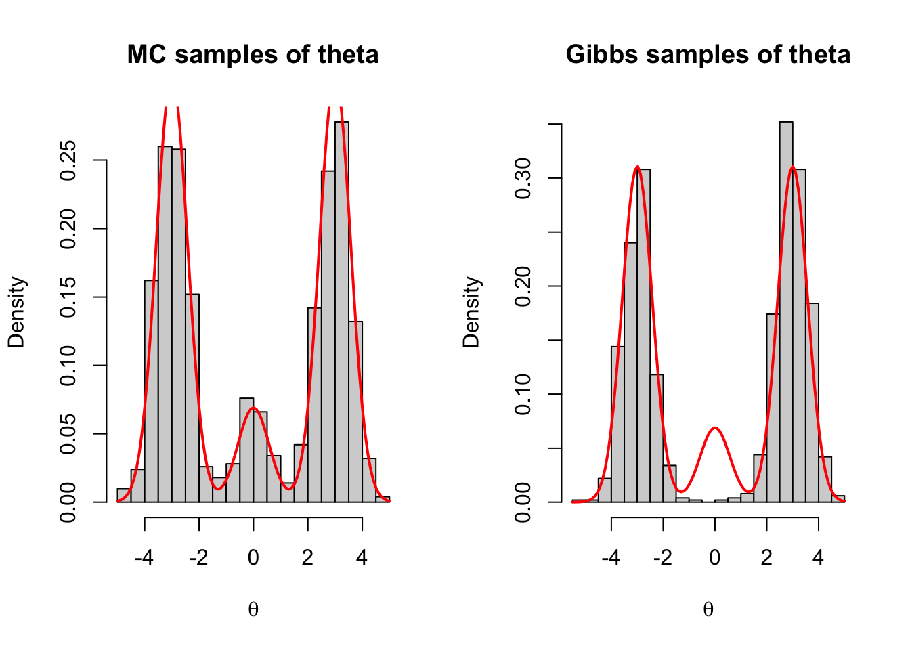
Why MCMC diagnostics matter
The main issue is that MCMC samples are dependent.
If autocorrelation drops quickly to zero, the chain mixes well.
If autocorrelation remains large for many lags, the chain mixes slowly.
High autocorrelation means we need many more samples to achieve a good approximation.
If we have an independent Monte Carlo sample, the autocorrelation is zero at all lags. In this case, (auto)correlation is not a problem. As a result, the acf() function will show a spike at lag 0 and essentially zero autocorrelation at all other lags.
set.seed(8310)x <-rnorm(1000)acf(x, main ="ACF of independent MC samples")
If there is an extremely high autocorrelation, as in the Gibbs sampler for the mixture distribution, then the acf() function will show a slow decay of autocorrelation across many lags.
set.seed(8310)n <-10000x <-numeric(n)x[1] <-rnorm(1)for (i in2:n) { x[i] <-0.9* x[i-1] +sqrt(1-0.9^2) *rnorm(1)}acf(x, main ="ACF of highly autocorrelated samples")
In the mixture example, the autocorrelation is extremely high: for the chain of 10,000 \(\theta\)-values, the lag-10 autocorrelation is about 0.93 and the lag-50 autocorrelation is still about 0.812. This indicates extremely slow movement through the parameter space.
Effective sample size
A useful summary of autocorrelation is the effective sample size.
The idea is simple:
If the MCMC samples are highly dependent, how many independent Monte Carlo samples would give the same precision?
If \(S_{\text{eff}}\) denotes the effective sample size, it is defined through
Thus, \(S_{\text{eff}}\) is the number of independent samples that would be equivalent, in precision, to the dependent MCMC chain.
In the coda package, the effective sample size is computed by
effectiveSize(x)
In Hoff’s mixture example, the effective sample size of 10,000 Gibbs samples of \(\theta\) is only about 18.42. So even though the chain contains 10,000 draws, its precision is only about as good as 18 independent Monte Carlo draws.
Warning“Interpretation”
A chain of length 10,000 does not necessarily contain 10,000 independent pieces of information.
What matters is not only the number of iterations, but also how strongly the chain is correlated.
Diagnostics for the semiconjugate normal model
We now return to the semiconjugate normal model from the previous section.
Recall that the Gibbs sampler generated samples of
For this example, the Gibbs sampler behaves much better than in the multimodal mixture example. Hoff reports that the traceplots suggest rapid convergence and relatively low autocorrelation. In particular, the lag-1 autocorrelation is about 0.031 for \(\theta\) and about 0.147 for \(\sigma^2\), with effective sample sizes about 1000 and 742, respectively.
This illustrates an important lesson:
Not all MCMC problems are equally difficult.
A Gibbs sampler can work extremely well in some models and very poorly in others.
The three most basic diagnostics
For beginning MCMC analysis, three diagnostics are especially important:
Traceplots
A traceplot displays the sampled values in the order they were generated.
What we hope to see:
the chain fluctuates around a stable region;
there is no obvious drift or trend;
the chain moves around rather than sticking for too long in one place.
What would be concerning: + a strong upward or downward trend; + a sudden shift from one region to another after a long time; + long flat stretches indicating the chain is barely moving.
Autocorrelation plots
An autocorrelation plot shows how strongly the samples depend on previous iterations.
What we hope to see:
autocorrelation drops quickly toward zero.
What would be concerning:
autocorrelation remains large for many lags.
Effective sample size
Effective sample size summarizes the practical amount of information in the chain.
What we hope to see:
an effective sample size that is not too small relative to the total number of samples.
What would be concerning:
a very small effective sample size, indicating that the chain is highly inefficient.
The following code reruns the Gibbs sampler so that the matrix PHI is available for diagnostic plots and effective sample size calculations.
par(mfrow =c(2, 2))plot(PHI[, "theta"], type ="l",main =expression("Traceplot of "* theta),xlab ="Iteration", ylab =expression(theta))plot(PHI[, "sigma2_inv"], type ="l",main =expression("Traceplot of "*tilde(sigma)^2),xlab ="Iteration", ylab =expression(tilde(sigma)^2))acf(PHI[, "theta"], main =expression("ACF of "* theta))acf(PHI[, "sigma2_inv"], main =expression("ACF of "*tilde(sigma)^2))
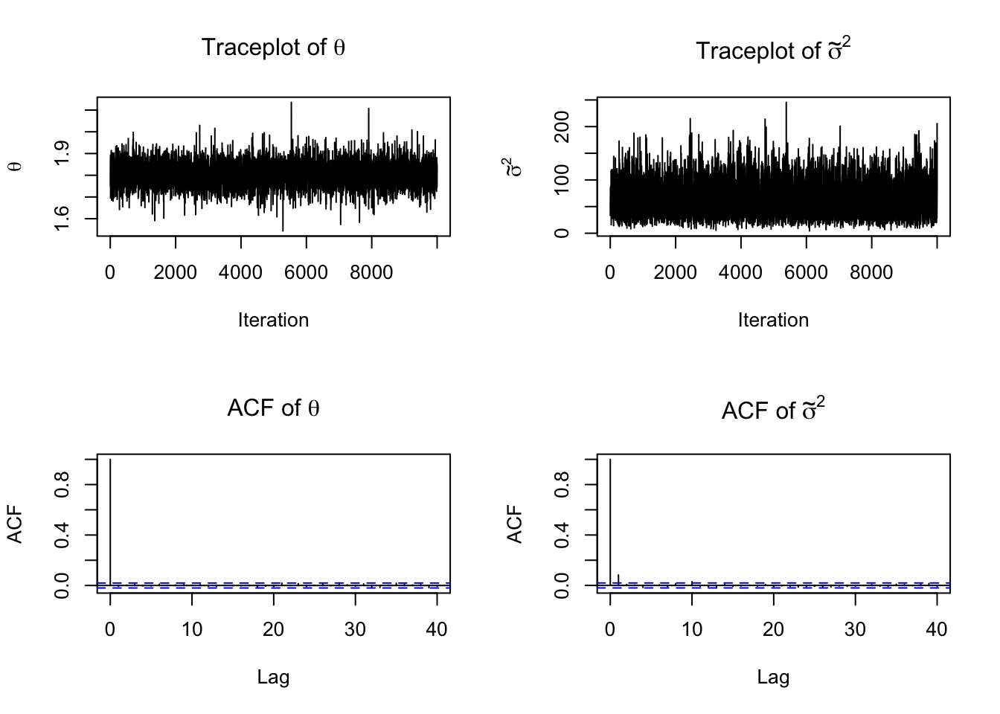
coda::effectiveSize(PHI[, "theta"])
var1
10000
coda::effectiveSize(PHI[, "sigma2_inv"])
var1
8465.349
Practical interpretation
When looking at MCMC output, we are usually asking three basic questions:
Has the chain reached the target distribution? Traceplots help assess this.
How dependent are the samples? Autocorrelation plots help assess this.
How much information do the samples really contain? Effective sample size gives a practical summary.
These diagnostics are important because MCMC output can look large in quantity while still being limited in quality.
NoteTakeaway
MCMC diagnostics are not just technical tools.
They answer three fundamental questions:
Did the chain converge? → traceplots, Gelman–Rubin
How dependent are the samples? → autocorrelation
How much information do we really have? → effective sample size
NoteSummary
The main lesson of this section is that MCMC samples are useful only to the extent that they
adequately represent the target distribution, and
provide enough effective information for posterior approximation.
In practice, we therefore examine
traceplots for approximate stationarity,
autocorrelation functions for dependence, and
effective sample sizes for precision.
Compared with ordinary MC, MCMC often requires much more care in assessing the quality of the approximation.
6.9 Example: Using rjags and coda for MCMC diagnostics
In this example, we fit a simple normal model in JAGS and then use the coda package to examine basic MCMC diagnostics.
The object mcmc_out is an mcmc.list, which can be analyzed using functions from the coda package.
6.9.7 Step 7: Basic summary and diagnostics
summary(mcmc_out)
Iterations = 5001:15000
Thinning interval = 1
Number of chains = 3
Sample size per chain = 10000
1. Empirical mean and standard deviation for each variable,
plus standard error of the mean:
Mean SD Naive SE Time-series SE
mu 1.9117 0.12665 0.0007312 0.0007312
sigma 0.8868 0.09162 0.0005290 0.0005452
tau 1.3115 0.26445 0.0015268 0.0015749
2. Quantiles for each variable:
2.5% 25% 50% 75% 97.5%
mu 1.6634 1.8270 1.9117 1.9959 2.159
sigma 0.7303 0.8219 0.8791 0.9442 1.087
tau 0.8464 1.1216 1.2938 1.4803 1.875
This gives posterior means, standard deviations, and quantiles for each monitored parameter.
6.9.8 Step 8: Traceplots
A traceplot displays the sampled values in the order they were generated.
traceplot(mcmc_out)
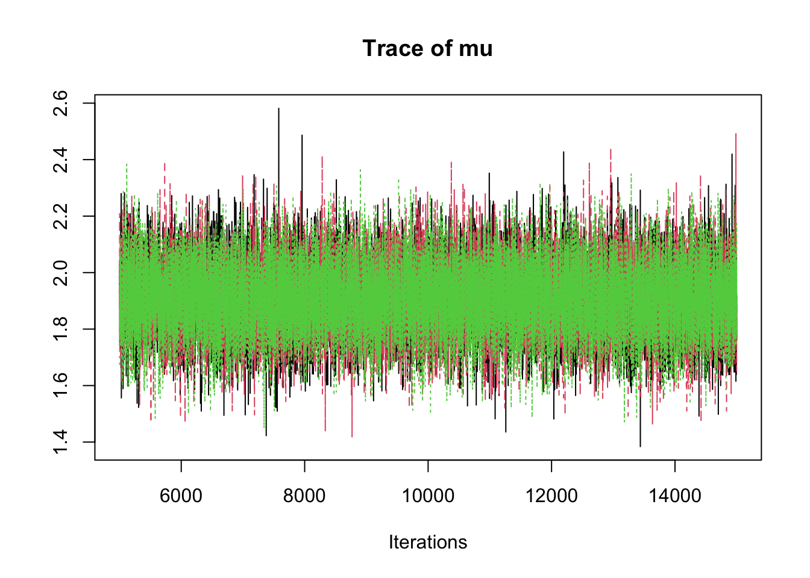
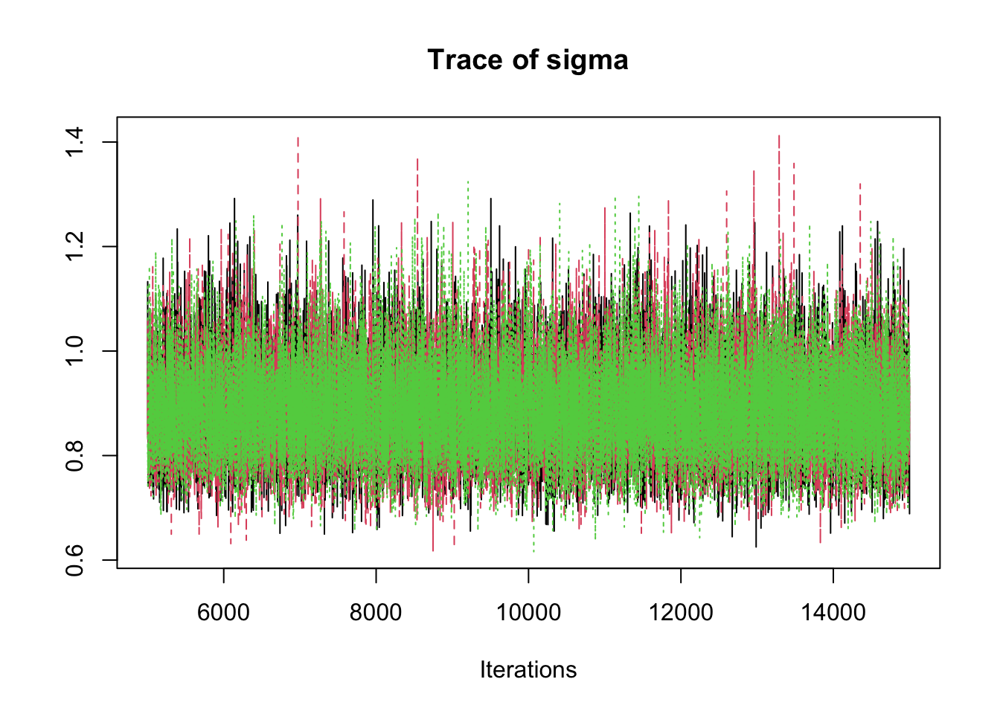
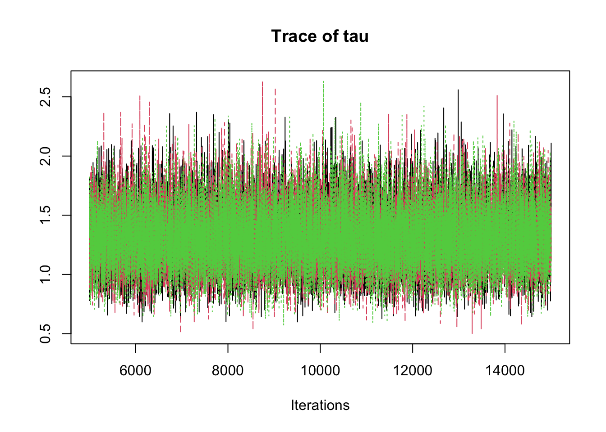
Interpretation:
A good traceplot should fluctuate around a stable region.
Different chains should overlap reasonably well.
Strong trends or long drifts may indicate lack of convergence.
6.9.9 Step 9: Posterior density plots
plot(mcmc_out)
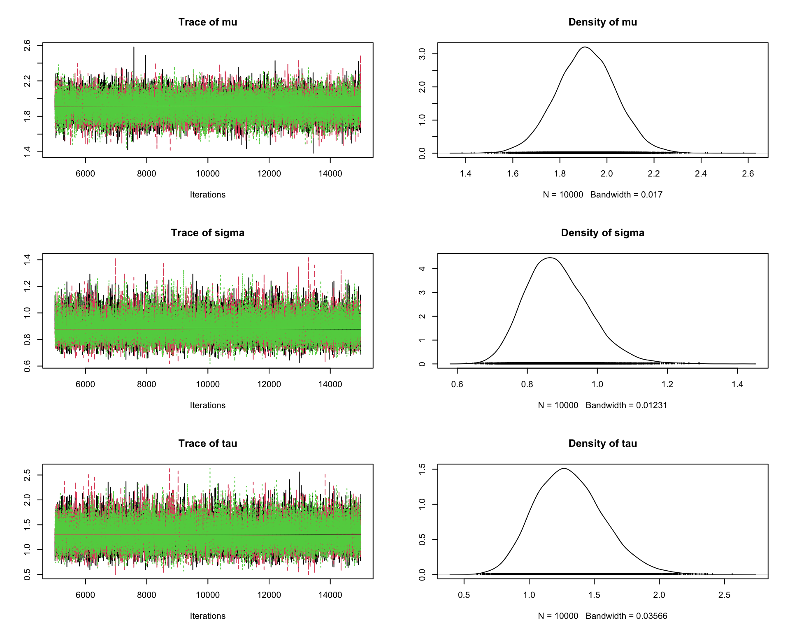
This produces both traceplots and marginal density plots.
Interpretation: • Density plots summarize the posterior distribution. • If the chains have converged, the density estimates from different chains should be similar.
6.9.10 Step 10: Autocorrelation plots
Autocorrelation shows how strongly the samples depend on previous draws.
autocorr.plot(mcmc_out)
Interpretation: • Rapid decay in autocorrelation is a good sign. • Slow decay indicates that the chain is highly dependent and mixes slowly.
6.9.11 Step 11: Gelman–Rubin diagnostic
A standard convergence diagnostic is the Gelman–Rubin statistic.
gelman.diag(mcmc_out)
Potential scale reduction factors:
Point est. Upper C.I.
mu 1 1
sigma 1 1
tau 1 1
Multivariate psrf
1
gelman.plot(mcmc_out)
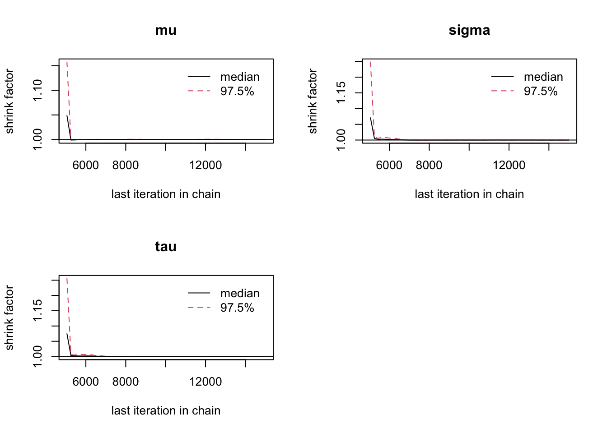
Interpretation: • Values close to 1 suggest that the chains have mixed well. • Values substantially larger than 1 suggest that more iterations may be needed.
6.9.12 Step 12: Effective sample size
The effective sample size measures how many independent samples the MCMC output is approximately worth.
effectiveSize(mcmc_out)
mu sigma tau
30000.00 29114.77 28875.24
Interpretation: • Even if we generate many MCMC samples, the effective sample size may be much smaller if autocorrelation is high. • Larger effective sample sizes indicate more precise Monte Carlo approximation.
6.9.13 Step 13: Numerical autocorrelations
We can also compute autocorrelations directly.
autocorr.diag(mcmc_out)
mu sigma tau
Lag 0 1.0000000000 1.000000000 1.000000000
Lag 1 -0.0069658312 0.024931411 0.020579955
Lag 5 -0.0002712991 0.005532650 0.004830330
Lag 10 0.0026592891 -0.005498872 -0.007092138
Lag 50 -0.0071958173 -0.003222164 -0.001871304
This reports estimated autocorrelations at selected lags.
6.9.14 Discussion
This example illustrates a typical workflow for MCMC diagnostics using rjags and coda: 1. run multiple chains from dispersed starting values; 2. discard burn-in; 3. examine traceplots and density plots; 4. check autocorrelation; 5. compute Gelman–Rubin diagnostics; 6. compute effective sample sizes.
In practice, no single diagnostic is sufficient on its own. It is best to use several diagnostics together when assessing MCMC quality.
Putting everything together
library(rjags)library(coda)set.seed(8310)# Simulate datay <-rnorm(50, mean =2, sd =1)data_list <-list(y = y,n =length(y))# JAGS modelmodel_string <-"model { for (i in 1:n) { y[i] ~ dnorm(mu, tau) } mu ~ dnorm(0, 0.001) tau ~ dgamma(0.001, 0.001) sigma <- 1 / sqrt(tau)}"# Initial valuesinits1 <-list(mu =0, tau =1)inits2 <-list(mu =5, tau =0.5)inits3 <-list(mu =-3, tau =2)# Build modeljags_mod <-jags.model(file =textConnection(model_string),data = data_list,inits =list(inits1, inits2, inits3),n.chains =3,n.adapt =1000)
Compiling model graph
Resolving undeclared variables
Allocating nodes
Graph information:
Observed stochastic nodes: 50
Unobserved stochastic nodes: 2
Total graph size: 58
Initializing model
Iterations = 5001:15000
Thinning interval = 1
Number of chains = 3
Sample size per chain = 10000
1. Empirical mean and standard deviation for each variable,
plus standard error of the mean:
Mean SD Naive SE Time-series SE
mu 1.9121 0.12522 0.0007229 0.0007298
sigma 0.8875 0.09135 0.0005274 0.0005324
tau 1.3091 0.26323 0.0015198 0.0015351
2. Quantiles for each variable:
2.5% 25% 50% 75% 97.5%
mu 1.6653 1.829 1.9126 1.9955 2.158
sigma 0.7297 0.823 0.8801 0.9437 1.086
tau 0.8475 1.123 1.2909 1.4762 1.878
# Diagnosticscoda::traceplot(mcmc_out)
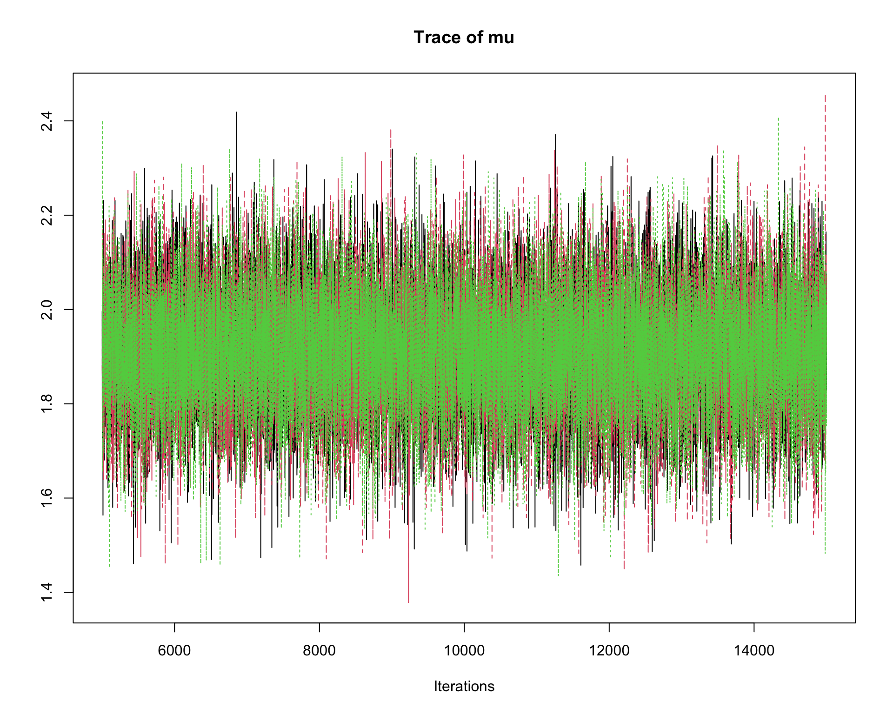
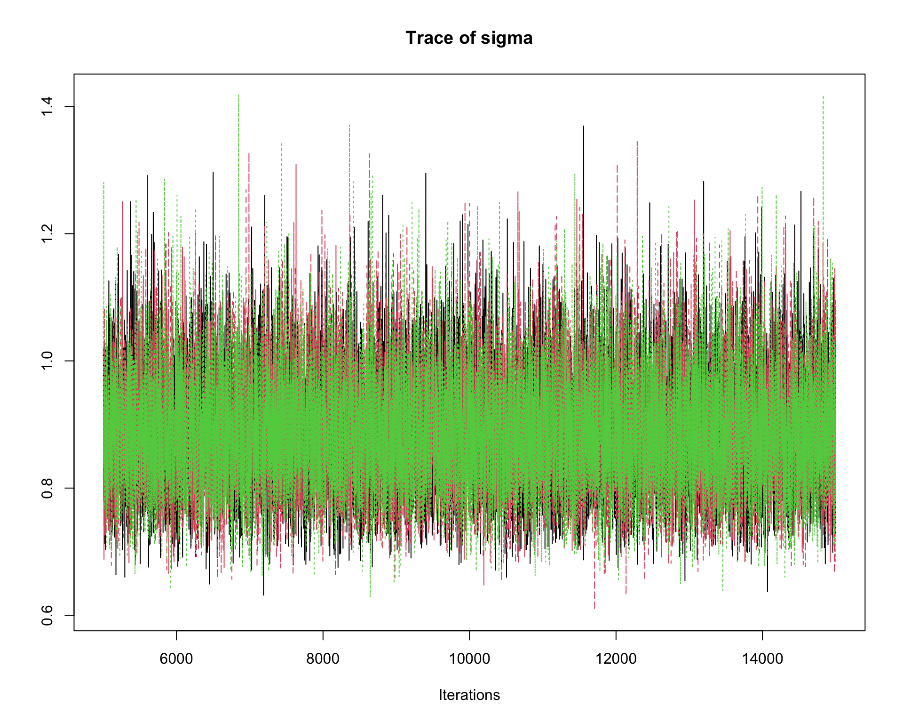
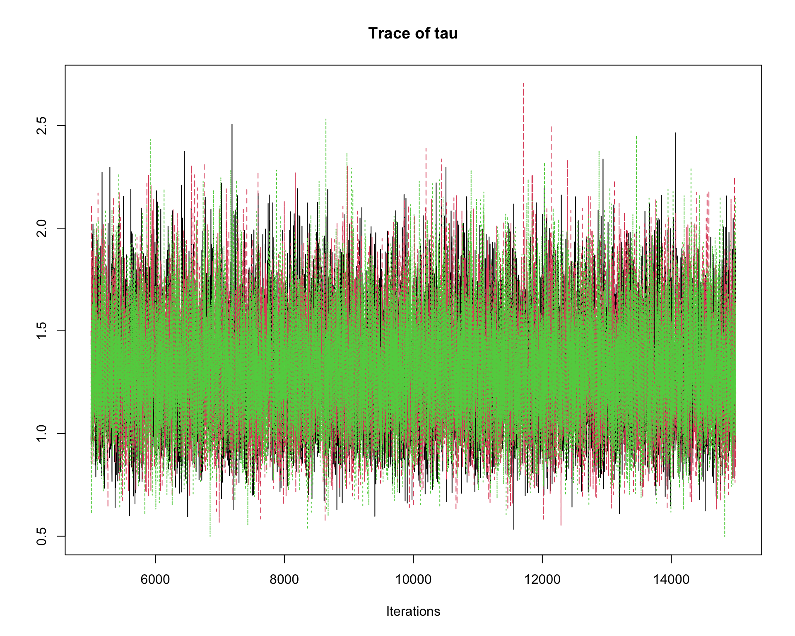
plot(mcmc_out)
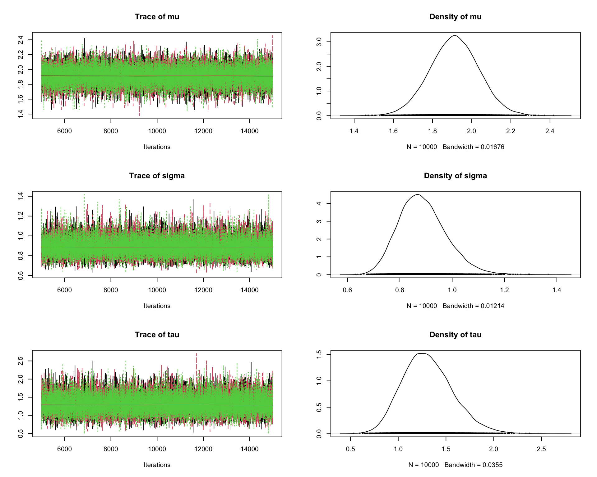
coda::autocorr.plot(mcmc_out)
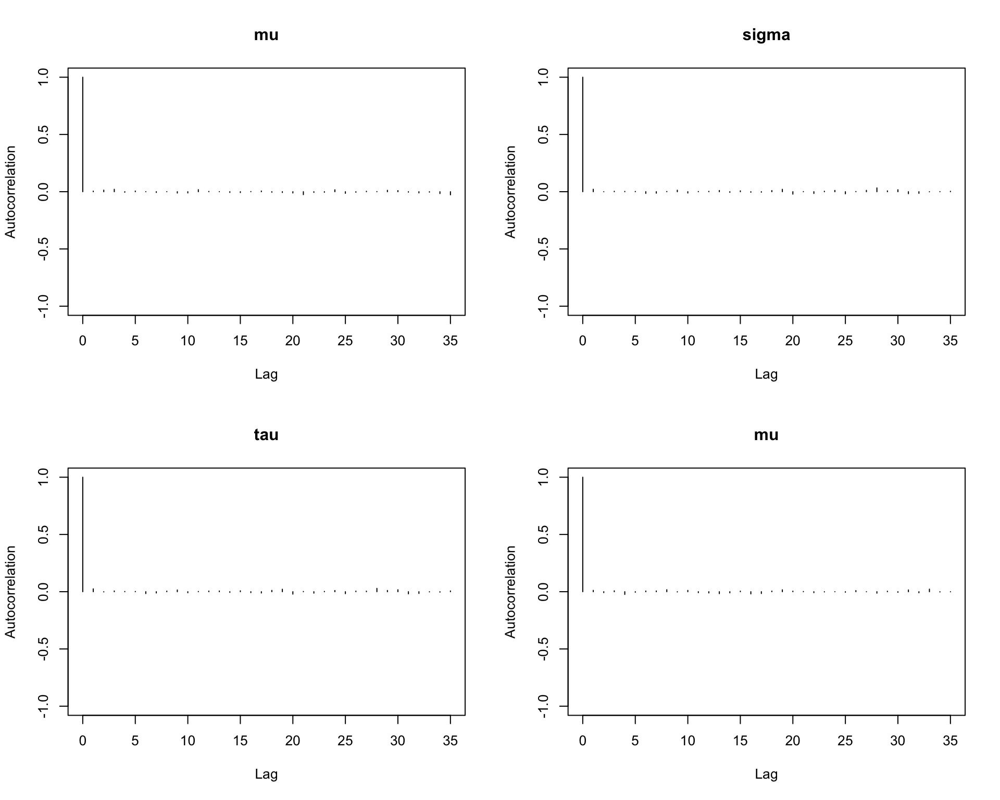
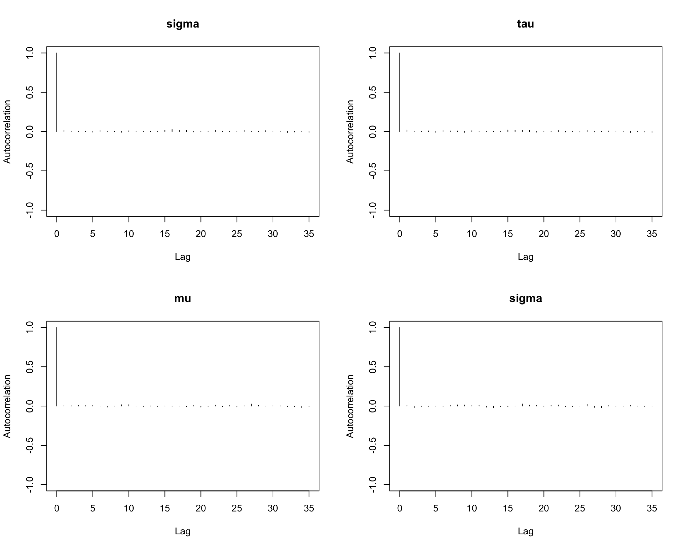
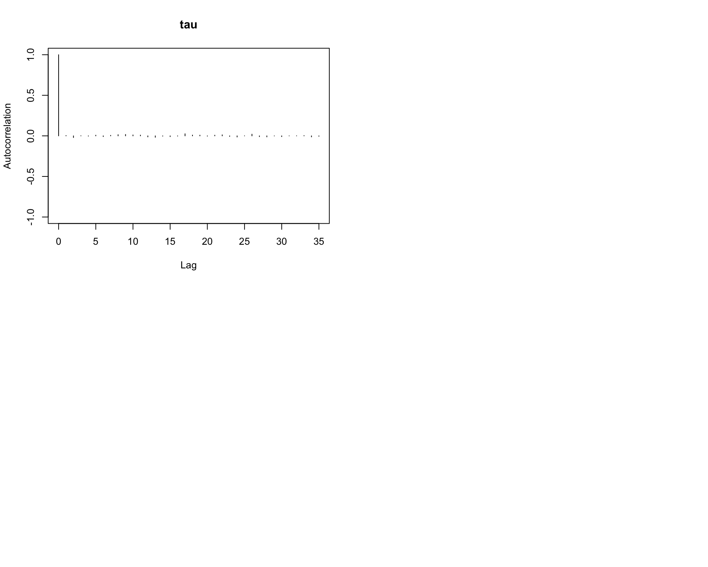
coda::gelman.diag(mcmc_out)
Potential scale reduction factors:
Point est. Upper C.I.
mu 1 1
sigma 1 1
tau 1 1
Multivariate psrf
1
coda::gelman.plot(mcmc_out)
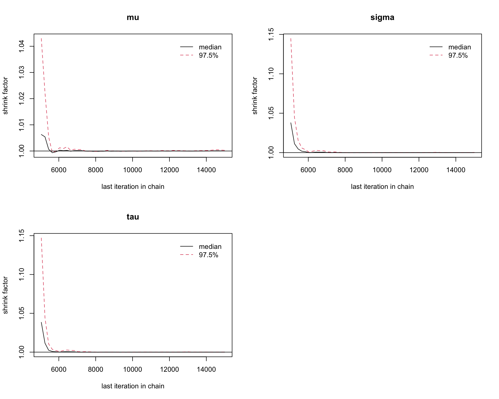
coda::effectiveSize(mcmc_out)
mu sigma tau
29489.14 29467.71 29452.91
coda::autocorr.diag(mcmc_out)
mu sigma tau
Lag 0 1.0000000000 1.0000000000 1.0000000000
Lag 1 0.0070859739 0.0159861627 0.0162967605
Lag 5 0.0034005881 -0.0020200272 0.0004835755
Lag 10 0.0062517801 0.0009915335 0.0043731003
Lag 50 -0.0002160502 -0.0013932735 0.0003868567
This Chapter borrows materials from Chapter 6 in Hoff (2009).